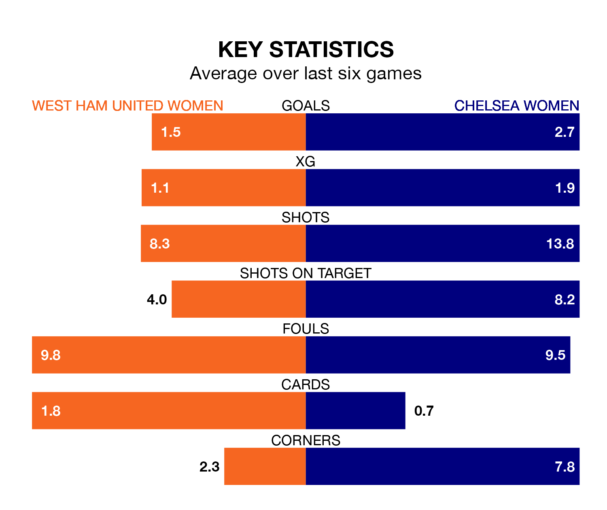

Relegation candidates West Ham United Women face a challenge against high-flying Chelsea Women at the Chigwell Construction Stadium on Sunday.
West Ham United Women are 11th in the FA Women's Super League table, and have picked up three wins and three draws in their 16 games to date.
The Blues, meanwhile, are top of the standings with 40 points, having won 13 and drawn one.
With 48 goals in 16 games so far this season, Chelsea are the league's highest scorers with 3.0 goals per game. And they are conceding fewer than average, letting in 14 goals at a rate of 0.9 per game.
West Ham United, meanwhile, are below average scorers, with 1.1 goals per game, compared to a league average of 1.7. They have conceded 2.1 goals per game.
In Lauren James, the Blues have one of the league's most on-form strikers so far this season. She has notched 13 goals in 14 appearances, to sit second in the scoring charts.
Her goal rate of one every 81 minutes is much quicker than that of Viviane Asseyi, the Hammers' top scorer with a goal every 229 minutes, and a total of six goals in 16 games.
In the last 10 years, West Ham United and Chelsea have played each other on 16 occasions. Chelsea won 15 of them and they drew once.
On average, the Hammers scored 0.6 goals and the Blues 3.5 in those matches.
Their last meeting was on January 14, when Chelsea won 3-1 at home.
The home team are in mixed form in the FA Women's Super League, with two wins and a draw from their last six games.
With five wins and one loss over that period, the visitors' form is much better – they have taken 15 points from 18, compared to West Ham United's seven.
West Ham United's last match was on March 17, a 3-1 loss against Liverpool Women, with Riko Ueki getting the goal for the Hammers.
Chelsea beat Arsenal Women 3-1 last time out, on March 15, with Sjoeke Nüsken (two) and James on the scoresheet.
Updated: 10:19 (UTC), 22/03/24